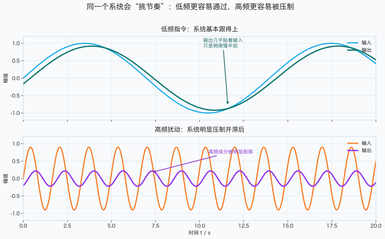
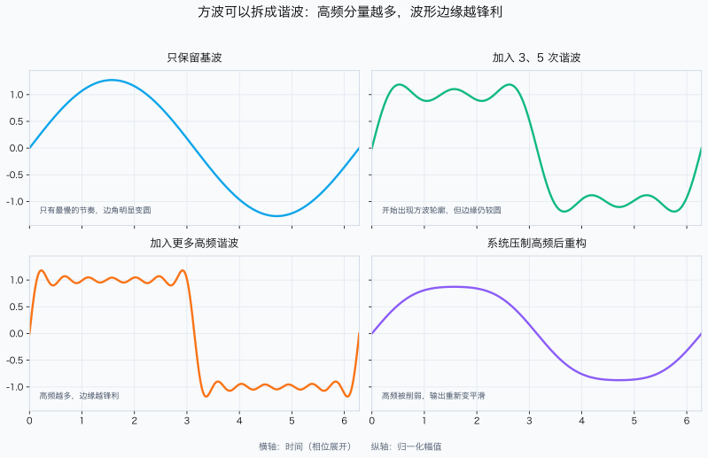
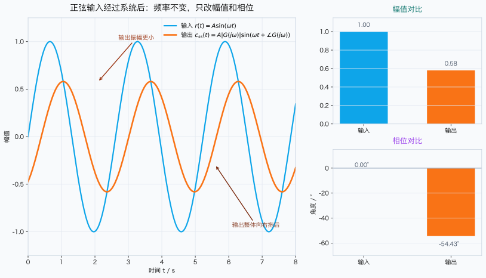

2-3 配图预览
当前 handout 中引用的 4 张图都在这里。你可以先整体看风格，再逐张打开 SVG/PNG 检查细节。
封面漫画
本轮不直接生成封面图，只保留讲义占位。制作提示词见：
../raw/cover-comic-prompt.md
船舶系统对低频指令与高频扰动的不同反应

2-3-fr-01-command-vs-disturbance.svg
方波谐波分解与系统滤波后重构

2-3-fr-02-square-wave-harmonics.svg
正弦输入与正弦稳态输出

2-3-fr-03-sine-in-sine-out.svg